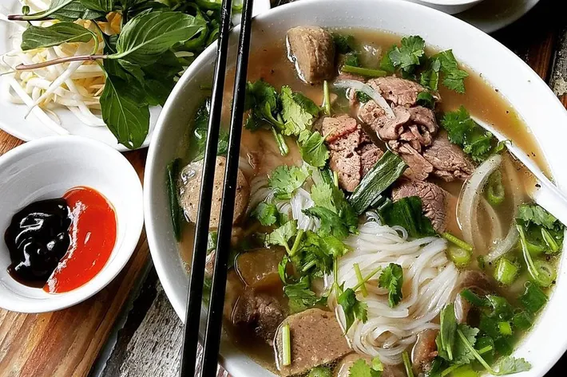

Pho

What is pho?
Pho is Vietnamese noodle soup made up of a beef bone broth, rice noodles,
various hebs, and meat (usually beef or chicken).
Pho is Vietnam's national dish. It's specific origns are unclear, but the first recipes are often traced back to the early 20th century,
The dish has since been popularized around the world.Different culutral variations of Pho exist,
The most known variations, including variations in noddle width, broth sweetness, and herb choices,
are distiguished between the Hanoi (northern) and Saigon (southern) styles of pho.
Main Ingredients
- Beef stock
- Steak
- Rice noodles
Toppings
- Basil (fresh)
- Bean sprouts
- Lime wedges
- Onions
- Sauce (Pho is served with usually hoisin and siracha sauces in the U.S.)
How to Make Pho
- Prep the protein. Pho can include a range of protien options including beef, pork, chicken, seaood, and tofu.
Cut the protien into thin strips that will cook quickly when plated with hot broth. Marinate to taste or leave unmarinated.
- Make the broth. Toast your chossen spices in the bottom of a crockpot. Then add onion, ginger, and a broth of your choice.
Cover and let simmer for 30 minutes. Strain, and it's now ready to serve.
- Prep the noodles. Cook the noodles of your choice to your desired preference
- Serve. Put the noodles in your serving bowl. Top it with the protein that you picked. Then ladle the hot broth into the bowl. Add garnish,
and submurge your meat to get it cooked. stir the various ingredients and sauces to further flavor the broth.Enjoy!